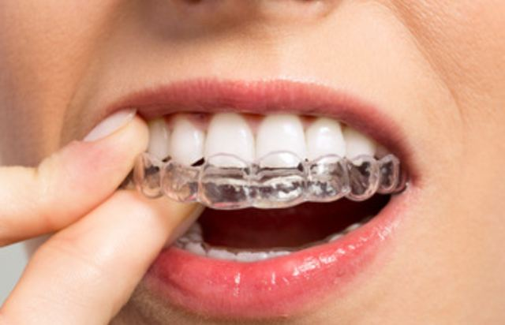

Alineadores
Alineadores transparentes

¿Para qué sirve?
Alinear los dientes con suavidad, alineador tras alineador.
¿Cuándo llevarlo?
22 h de 24, día y noche.
A recordar
- Se quitan solo para comer y cepillarse los dientes.
- Cepíllese los dientes antes de volver a ponérselos.
- Los dientes están sensibles de 1 a 3 días con cada alineador nuevo: es normal.
- Con elásticos: nunca elásticos sin el alineador.
Cuidados
En cada cepillado: cepillo de dientes y agua tibia con jabón.
La regla de oro
Nunca elásticos sin el alineador.
Alineador perdido: 80 €